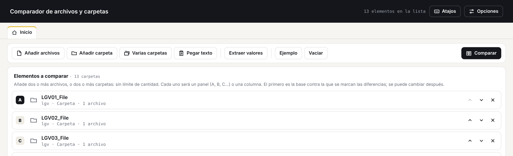
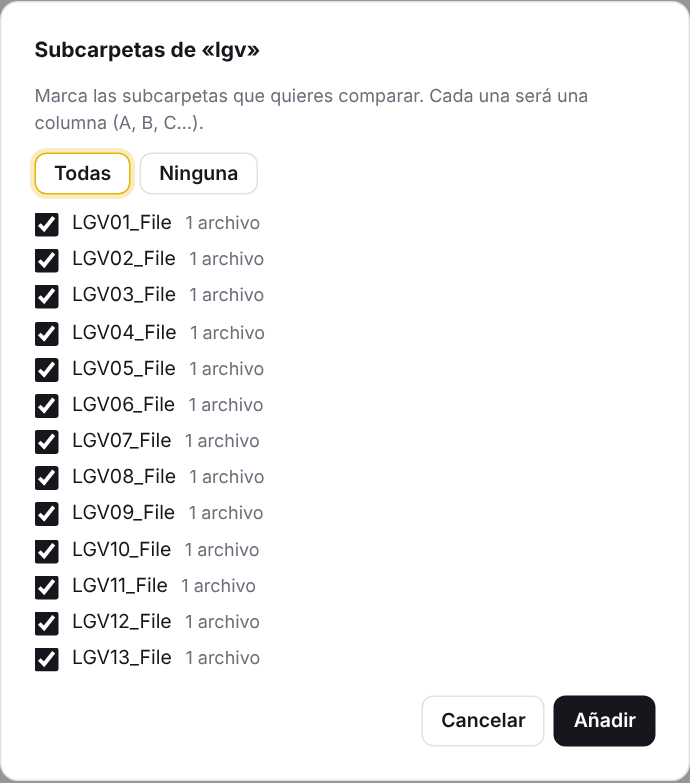
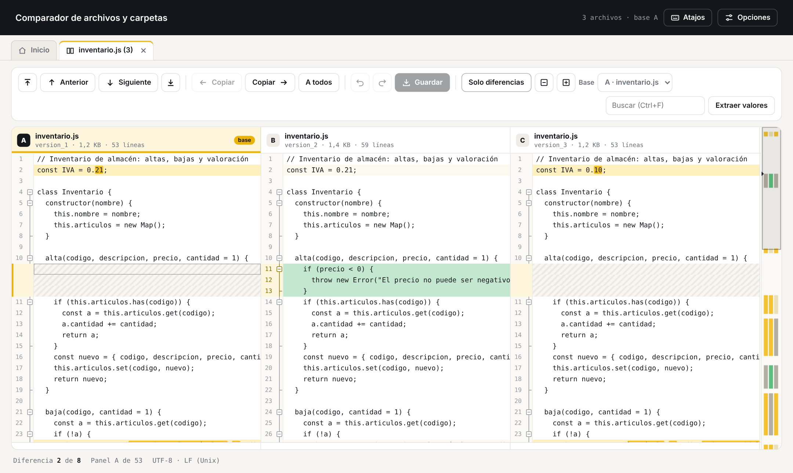
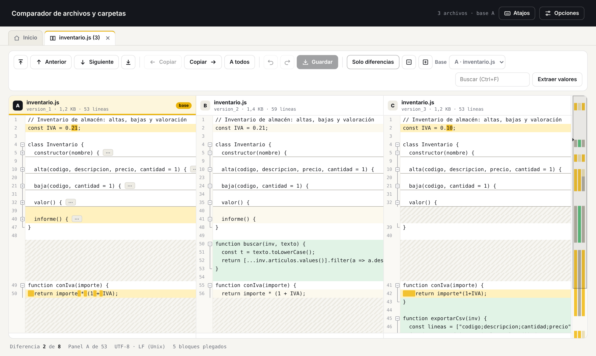
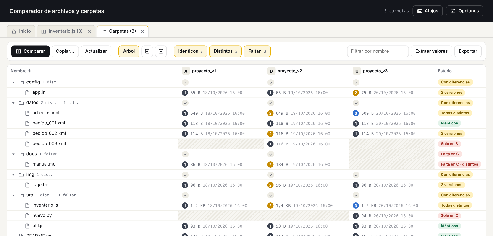
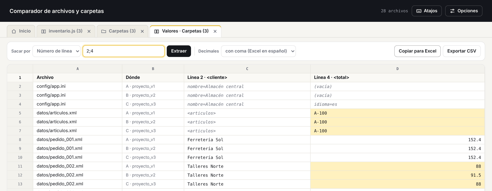
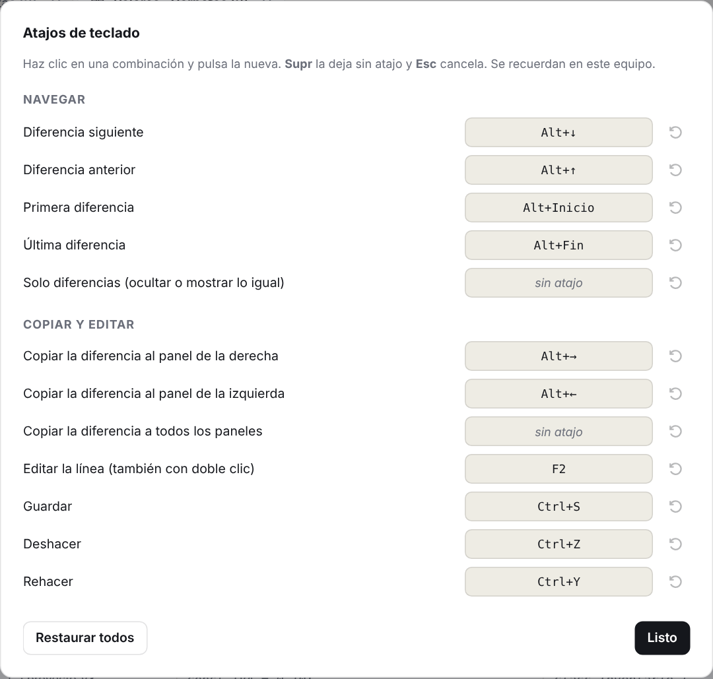

Compara muchos archivos o muchas carpetas a la vez, pliega el código como Notepad++ y saca los valores <palabra>valor</palabra> a una hoja que se pega en Excel.
Hay dos formas de usarlo, con las mismas funciones. Ninguna necesita instalar nada ni conexión a internet.
| Forma | Cómo se abre | Cuándo usarla |
|---|---|---|
Comparador.exe | Doble clic. Se abre en su propia ventana, maximizada. | En Windows 10 y 11: es lo normal. |
comparador.html | Doble clic; se abre en Chrome, Edge o Firefox. | En otro sistema, o si el .exe no arranca. |
.exe usa el motor de Microsoft Edge, que ya trae Windows. Si un equipo no lo tuviera, el programa avisa y ofrece instalarlo o abrir el comparador en el navegador.%LOCALAPPDATA%\Comparador. Se conservan al cerrar.En Inicio se arma la lista de lo que se va a comparar y se pulsa Comparar (Ctrl+Intro). Hay que elegir dos o más archivos, o dos o más carpetas, sin mezclar unos con otras. No hay límite de cantidad.

| Botón | Para qué sirve |
|---|---|
| Añadir archivos | Elegir uno o varios archivos a la vez (Ctrl+O). |
| Añadir carpeta | Elegir una carpeta. Se repite para añadir más. |
| Varias carpetas | Elegir la carpeta que las contiene y marcar sus subcarpetas, todas de una vez. |
| Pegar texto | Pegar un texto copiado de otro sitio y compararlo como si fuera un archivo. |
| Extraer valores | Sacar valores <palabra>valor</palabra> de la lista sin comparar (sección 6). |
| Ejemplo | Cargar tres versiones de un archivo o tres carpetas para probar. |
| Vaciar | Quitar todo de la lista. |

Cada archivo se ve en su panel, lado a lado, y al bajar se mueven todos juntos. Las líneas quedan alineadas: lo que falta en un archivo se ve como un hueco rayado.

| Color | Qué significa |
|---|---|
| Amarillo | Línea cambiada respecto a la base. Lo más oscuro dentro de la línea es lo que cambió. |
| Verde | Línea que existe en ese archivo y no en la base. |
| Rayado | Hueco: ese archivo no tiene esa línea. |
| Amarillo muy claro | La fila es diferente en otro panel, pero este panel es igual a la base. |
Cambiar la base: el desplegable Base de la barra, o doble clic en la cabecera de un panel.
Como en Notepad++, los cuadritos del margen pliegan un bloque (⊟) o lo despliegan (⊞). Al plegar en un panel se pliega en todos a la vez, para que sigan alineados. Un bloque plegado deja su primera línea a la vista con un «⋯» al final.

| Acción | Cómo |
|---|---|
| Plegar o desplegar un bloque | Clic en su cuadrito del margen. |
| Plegar todo / desplegar todo | Alt+0 / Alt+Mayús+0, o los botones ⊟ y ⊞ de la barra. |
| Plegar un nivel (1 = lo de fuera, 2 = lo de dentro…) | Alt+1 a Alt+8. Con Mayús, se despliega ese nivel. |
| Plegar el bloque donde está el cursor | Ctrl+Alt+F (con Mayús, desplegarlo). |
Los bloques se detectan según el tipo de archivo. Se puede forzar uno en Opciones → Plegado de código.
| Tipo de archivo | Qué se pliega |
|---|---|
| C, C#, Java, JavaScript, JSON, CSS, PHP, Go… | Lo que va entre llaves { } y corchetes [ ], los comentarios largos y las zonas #region. |
| Python, YAML | Cada bloque por su sangría. |
| XML, HTML, XAML, .config, .csproj… | Cada etiqueta que ocupa varias líneas, y los comentarios. |
| Markdown, INI, TOML | Cada título o sección [sección] hasta la siguiente. |
Cada carpeta es una columna (A, B, C…) y cada fila es un archivo, con su tamaño y su fecha en cada carpeta. El número de color indica el contenido: 1 2 3 los archivos con el mismo número son iguales entre sí. Así, con muchas carpetas se ve enseguida qué versiones coinciden.

| Estado | Qué significa |
|---|---|
| Idénticos | El archivo está en todas las carpetas y es igual en todas. |
| 2 versiones | Está en todas, pero no es igual: hay dos contenidos distintos. «Todos distintos» = ninguno coincide. |
| Falta en B | No existe en esa carpeta (columna rayada). |
| Solo en C | Solo existe en una carpeta. |
| Con diferencias | En una carpeta: algo de dentro es distinto o falta. |
Extraer valores saca lo que hay entre <palabra> y </palabra> en todos los archivos y lo pone en una hoja tipo Excel, una fila por archivo. Se abre desde Inicio, desde una comparación de carpetas o desde una de archivos.

12. Tiene que ser la misma en todos los archivos. Varias a la vez: 12;15;20-22, cada una en su columna.Atajo: en una comparación de archivos, clic derecho en una línea → Sacar el valor de la línea N en todos los paneles.
En Sacar por elige Palabra y escribe la etiqueta, por ejemplo precio. Se busca en todo el texto, esté en la línea que esté. Si aparece varias veces en un archivo, se elige una fila por valor, solo el primero o todos juntos en la misma celda.
| Lo que ves | Qué significa |
|---|---|
| Título de la columna | Toma el nombre de la etiqueta: «Línea 4 · <total>». |
| Amarillo | El mismo archivo tiene otro valor en otra carpeta o panel, o esa línea trae otra etiqueta. |
| Gris en cursiva | La línea no tiene el formato <palabra>valor</palabra>; se muestra tal cual. |
| «solo tiene N líneas» | El archivo es más corto que la línea pedida. |
| Fila Σ | Cuántos valores hay, cuántos distintos y, si son números, suma, promedio, mínimo y máximo. |
-119,1148). Con punto, Excel leería -119.1148 como un número enorme. Si el Excel está en inglés, elige con punto; tal cual no cambia nada.El botón Opciones, arriba a la derecha, está en todas las pestañas. Los cambios se guardan en el equipo y se aplican al momento en la comparación abierta; en las carpetas, al pulsar Actualizar.
| Opción | Qué hace | De fábrica |
|---|---|---|
| Espacios en blanco | Tenerlos en cuenta, ignorar cambios de cantidad (dos espacios = uno) o ignorarlos todos. | Tenerlos en cuenta |
| Ignorar mayúsculas y minúsculas | «Precio» y «precio» cuentan como iguales. | No |
| Ignorar el tipo de fin de línea | Un archivo de Windows (CRLF) y uno de Unix (LF) con el mismo texto cuentan como iguales. | Sí |
| Ignorar líneas en blanco | Las diferencias que son solo líneas vacías no cuentan. | No |
| Resaltar dentro de la línea | Marcar lo que cambió por palabras completas o letra a letra. | Palabras |
| Cómo detectar los bloques | Automático por extensión, o forzar llaves, sangría, etiquetas, títulos o sin plegado. | Automático |
| Líneas de contexto | Cuántas líneas iguales quedan a la vista alrededor de cada diferencia en «Solo diferencias». | 3 |
| Método (carpetas) | Por contenido (aplica las opciones de texto), por tamaño y fecha, o solo por tamaño. | Contenido |
| Excluir (carpetas) | Nombres que no se miran, separados por ;. Admite * y ?. | .git, node_modules, Thumbs.db… |
| Incluir solo (carpetas) | Si se rellena, solo se miran esos archivos, por ejemplo *.xml;*.txt. | Vacío (todos) |
Todos los atajos se pueden cambiar con el botón Atajos, arriba a la derecha. La tabla muestra los de fábrica.
| Acción | Atajo de fábrica |
|---|---|
| Diferencia siguiente / anterior | Alt+↓ / Alt+↑ |
| Primera / última diferencia | Alt+Inicio / Alt+Fin |
| Copiar la diferencia a la derecha / izquierda | Alt+→ / Alt+← |
| Copiar la diferencia a todos los paneles | sin atajo |
| Solo diferencias | sin atajo |
| Editar la línea | F2 (o doble clic) |
| Guardar / deshacer / rehacer | Ctrl+S / Ctrl+Z / Ctrl+Y |
| Plegar todo / desplegar todo | Alt+0 / Alt+Mayús+0 |
| Plegar / desplegar el bloque actual | Ctrl+Alt+F / Ctrl+Alt+Mayús+F |
| Plegar / desplegar un nivel (fijo) | Alt+1…8 / Alt+Mayús+1…8 |
| Buscar / siguiente / anterior | Ctrl+F / F3 / Mayús+F3 |
| Volver a leer y comparar | F5 |
| Comparar (en Inicio) | Ctrl+Intro |
| Añadir archivos (en Inicio) | Ctrl+O |

Si la combinación ya era de otra acción, el programa avisa y se la quita a esa. Los textos de ayuda de los botones y del clic derecho muestran siempre el atajo elegido.
| Problema | Solución |
|---|---|
Sale «Windows protegió su PC» al abrir el .exe. | Pulsa Más información → Ejecutar de todas formas. Pasa porque el programa no está firmado. |
El .exe avisa de que falta WebView2. | Acepta para instalarlo desde Microsoft, o elige abrir el comparador en el navegador. |
Al pegar en Excel, los números salen enormes (-119.114.888…). | En Extraer valores, pon Decimales: con coma. |
| El botón Comparar está gris. | Hacen falta al menos dos elementos, y que sean todos archivos o todas carpetas. |
| Al guardar se descarga una copia en vez de cambiar el original. | Pasa con textos pegados, en Firefox o con carpetas añadidas de otra forma. Abre los archivos con «Añadir archivos» o «Añadir carpeta». |
| Copiar… entre carpetas no está disponible. | Añade las carpetas con «Añadir carpeta» o «Varias carpetas»: así el programa puede escribir en ellas. |
| Comparar muchas carpetas tarda. | Es normal: lee cada archivo. Usa Opciones → Método: Tamaño y fecha, o excluye las carpetas que no hagan falta. |
| Dos archivos iguales salen como distintos. | Revisa las opciones de espacios, mayúsculas y fin de línea: sin ellas, un espacio de más ya es una diferencia. |
| Se perdió el orden puesto a mano en la lista. | Al añadir un elemento, la lista se ordena por nombre. Usa las flechas ↑ ↓ después de añadir todo. |